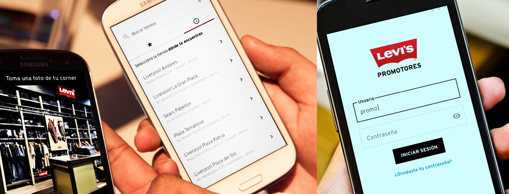
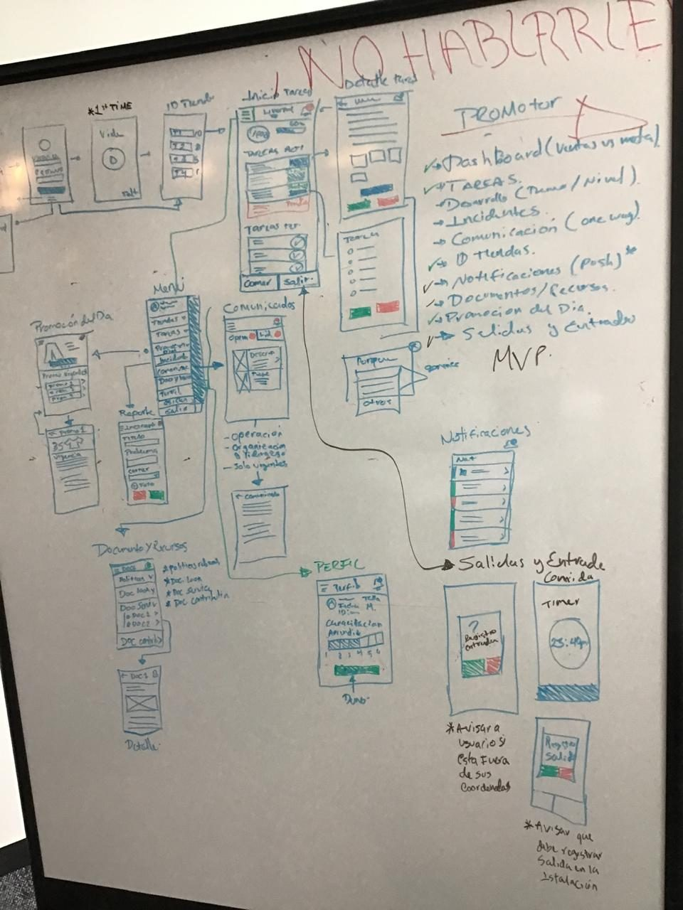
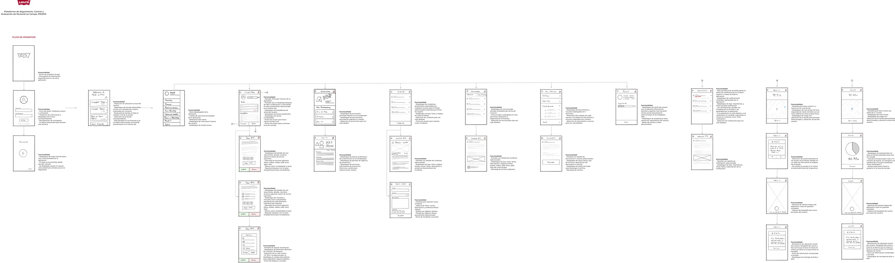
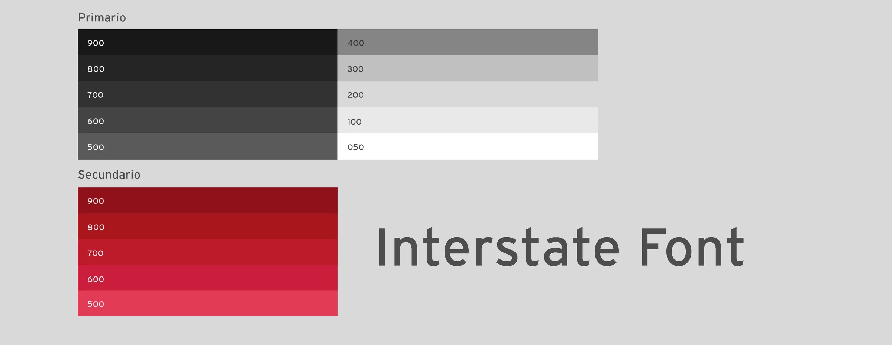
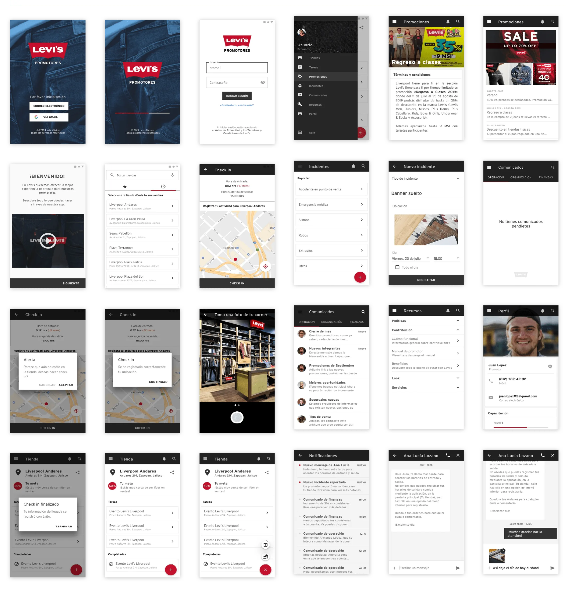

A five-day Design Sprint to design, prototype, and validate a mobile tool for Levi's in-store promoters. The sprint compressed discovery through usability testing into one week — producing a validated, brand-aligned interface ready for development handoff by day 5.

Business problem: Levi's in-store promoters are a direct sales channel — their ability to guide customers confidently toward the right product affects conversion rates, average order value, and brand perception at the point of sale. Without a reliable tool, promoters relied on memory, physical lookbooks, or interrupting customers to check with managers — all of which create friction in the selling moment.
User problem: Promoters operate under constant context-switching pressure. They're mid-conversation with a customer and need product information fast — they can't stop to navigate a slow or complex interface. The dominant constraint was: the tool must work in under 3 taps or it won't be used. Every interaction competes with the in-person customer experience for attention.
Why a sprint: Levi's needed to validate the concept before committing to full development. The sprint format was chosen specifically to reduce that risk — test a prototype with real promoters in one week, then decide whether to build.
| Area | Who | Notes |
|---|---|---|
| Problem framing Shared | Full sprint team | Day 1 structured mapping of promoter activities and friction points |
| Concept ideation Shared | Full sprint team | Parallel sketching with team + client; I contributed interaction concepts |
| UI design Me | Solo | All screen designs, component states, and visual execution — my primary ownership |
| Material Design implementation Me | Solo | Adapting Material components to Levi's brand; selecting right patterns for use case |
| Prototype build Me | Solo | Figma prototype used in usability test sessions |
| Handoff package Me | Solo | Specs, interaction notes, assets, and component documentation for Smarttie dev team |
| Usability sessions Shared | With sprint lead | I observed and took notes; sprint lead moderated |
The five-day structure gave every decision a deadline — which is the mechanism that makes sprints work. Time constraints force prioritization and prevent over-design.
The team mapped promoter activities, the cadence of customer interactions, and the specific moments where they needed information fast. Three friction patterns emerged consistently:

The team generated parallel interaction concepts and evaluated them against the two non-negotiable constraints: stay-present with customers (no extended UI sessions), and legible at a glance (no dense data tables or nested navigation).
Two concepts were shortlisted: a tab-bar navigation (persistent, immediate access to all sections) and a gesture-based card stack (swipe between contexts). The gesture concept felt more modern but introduced discoverability risk — users unfamiliar with the pattern would need to learn it before using the app effectively in a customer-facing scenario. We chose tab navigation: immediately understandable, recoverable from any state, and consistent with how promoters already navigate other apps on their devices. Familiarity over novelty was the right tradeoff for a tool that needs to work under pressure.

I moved from low-fidelity wireframes to a testable high-fidelity prototype in one day — made possible by aligning on Material Design as the component framework.
Building a custom component system from scratch for a 5-day sprint would have consumed the entire timeline. Material Design gave the team a complete, tested, accessible component vocabulary — focus rings, touch targets, typography scale, elevation — out of the box. The tradeoff was visual differentiation: a Material-based app looks like a Material app. I managed this by applying Levi's brand tokens (typography, color, logo) as an overlay on the Material structure — so the experience felt brand-consistent without requiring custom component development. The result was testable and implementable within sprint constraints.

Usability sessions were conducted with Levi's promoters using a think-aloud protocol. Participants navigated three primary flows: finding product information, logging an incident, and checking their profile and schedule.
Two findings changed the design before handoff:
The two changes from testing were implemented on day 5 before finalizing the handoff package. I delivered: annotated specs for all screens, component documentation with interaction states, asset exports, and a written summary of testing findings and the design rationale behind each decision — so the development team understood not just what to build but why each pattern was chosen.

Material Design's accessibility foundation was preserved rather than overridden:
The patterns established in the sprint were designed to extend:
The sprint produced a prototype tested with real Levi's promoters, two validated design changes from testing findings, and a complete handoff package — all within the sprint constraint. The 5-day format demonstrated that high-confidence design decisions don't require long timelines; they require structured decision-making and well-timed user input.
{kind=link}
{kind=link}
{kind=link}
{kind=link}
{kind=link}
{kind=link}
{kind=link}
{kind=link}